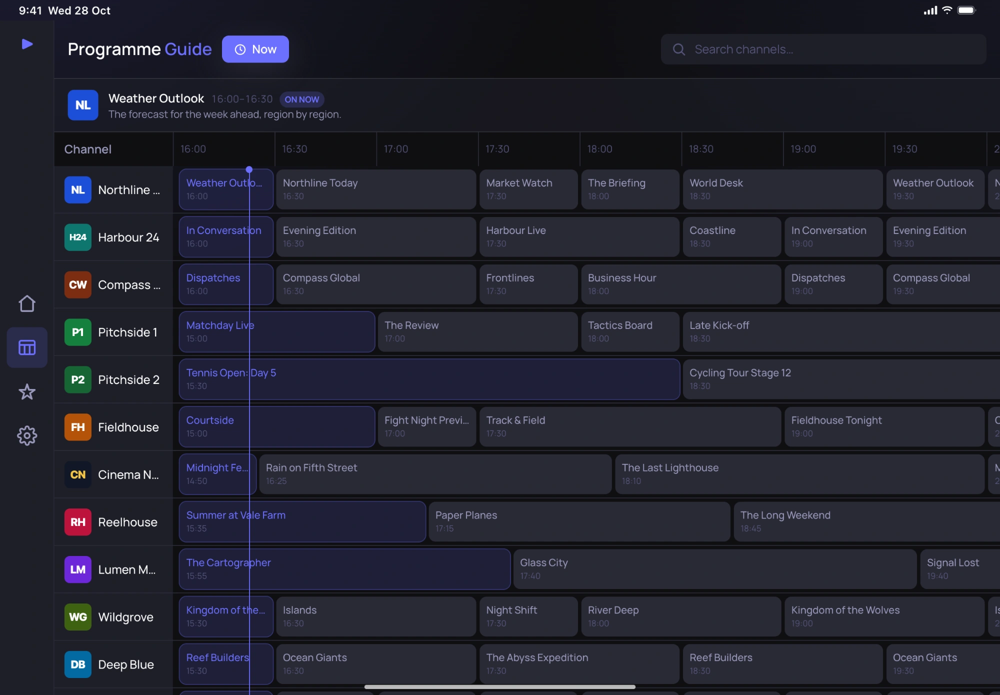
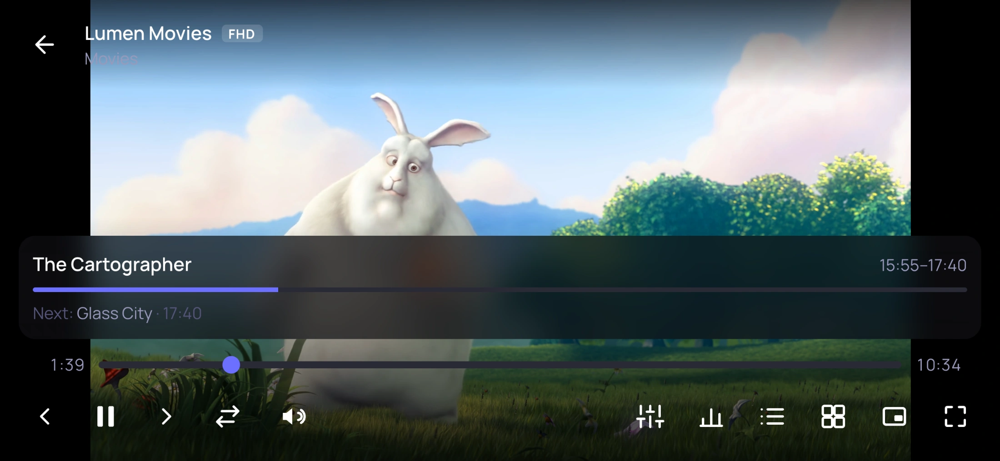
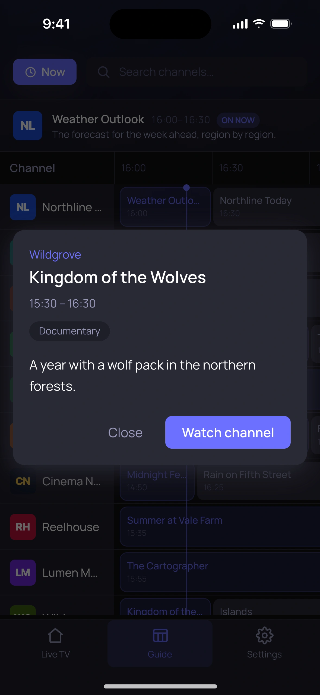
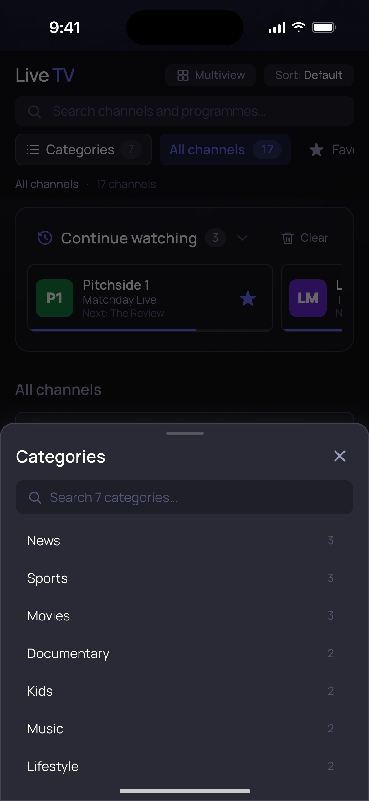

~/jfpf / apps / indigo-iptv
Indigo IPTV
A fast, clean player for the IPTV service you already have. Add your playlist or Xtream Codes login and get live TV, a full programme guide, and your provider’s movies and series, on every screen you own.
No channels included. Indigo IPTV is a player. It doesn’t provide, sell or recommend any TV content: you need a subscription from a provider of your choice, and you’re responsible for having the right to watch it.
Everything your provider gives you, organised
Built for big playlists: tens of thousands of channels stay quick to browse and search.
-
Live TV
Channels grouped by category, with what’s on now and next. Search by channel or by programme.
-
Programme guide
A full TV guide from your provider’s XMLTV data. Scroll through the day, open a programme’s details, and jump back to now.
-
Movies & series
Your provider’s film and series library, with artwork, seasons and episodes, and resume where you stopped (Xtream Codes).
-
Catch-up
Replay programmes from the past few days, straight from the guide, where your provider offers it.
-
Plays almost anything
HLS and MPEG-TS streams, HEVC video and Dolby audio. A built-in VLC engine takes over for MKV files and the streams a phone can’t play on its own.
-
Multiview
Watch several channels at once on one screen, and choose which one you hear.
-
Favourites & history
Star the channels you watch, put them in your order, and pick up where you left off.
-
Profiles & parental lock
Keep several providers apart, each with its own favourites and guide. Lock categories behind a PIN.
- iPhone
- iPad
- Android
- Android TV
- macOS
- Windows
- Linux
Made for phones, tablets and the big screen




Screenshots use the app’s built-in demo: the channels and programmes are fictional, and the video is Big Buck Bunny (© Blender Foundation, CC BY 3.0).
Questions
Does Indigo IPTV come with channels?
No. Indigo IPTV is a player, like a video player for your files. It plays what your IPTV provider gives you and doesn’t include, sell or link to any content.
Não. O Indigo IPTV é um leitor, como um leitor de vídeo para os seus ficheiros. Reproduz o que o seu fornecedor IPTV lhe dá e não inclui, vende nem indica qualquer conteúdo.
What do I need to get started?
A playlist link (M3U) or an Xtream Codes login (server, username and password) from your provider. A guide link (XMLTV) is optional: many providers include one. You can also try the app first with its built-in demo.
Uma ligação para uma lista (M3U) ou um acesso Xtream Codes (servidor, utilizador e palavra-passe) do seu fornecedor. A ligação do guia (XMLTV) é opcional: muitos fornecedores incluem-na. Também pode experimentar primeiro com a demonstração incluída na app.
Is my login safe?
Your provider’s address and login stay on your device, in its secure storage (the Keychain on iPhone and iPad, the Android Keystore on Android), and are only ever sent to your provider. Indigo IPTV has no account and no server of its own. See the privacy policy.
O endereço e os dados de acesso do seu fornecedor ficam no seu dispositivo, no armazenamento seguro (o Keychain no iPhone e iPad, o Android Keystore no Android), e só são enviados ao seu fornecedor. O Indigo IPTV não tem conta nem servidor próprio. Consulte a política de privacidade.
Which devices does it run on?
iPhone and iPad, Android phones and tablets, Android TV, and desktop computers (macOS, Windows and Linux). A few features depend on the device: recording is Android-only for now.
iPhone e iPad, telemóveis e tablets Android, Android TV e computadores (macOS, Windows e Linux). Algumas funcionalidades dependem do dispositivo: por agora, a gravação só existe no Android.
A channel won’t play. What can I do?
First check that it plays elsewhere: if your provider is down or busy, no player can show it. If it plays elsewhere but not in Indigo IPTV, email us the channel’s format if you know it (for example HEVC or MKV), your device, and what you see.
Primeiro, confirme que reproduz noutro sítio: se o fornecedor estiver em baixo ou ocupado, nenhum leitor o consegue mostrar. Se reproduzir noutro sítio mas não no Indigo IPTV, envie-nos por email o formato do canal se o souber (por exemplo HEVC ou MKV), o seu dispositivo e o que vê.
How do I get help?
Email support@jfpfsolutions.com. We usually reply within one business day.
Envie um email para support@jfpfsolutions.com. Normalmente respondemos num dia útil.